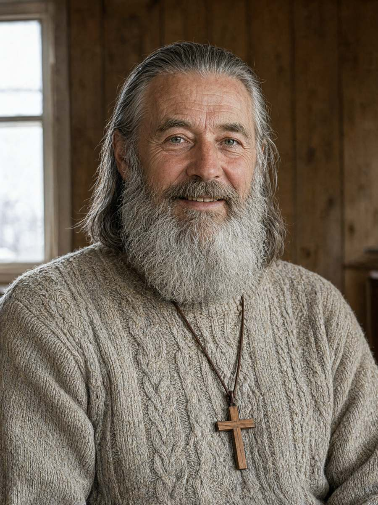

Місто: с. Підгір'я, Тисменицька громада
Дата: 18.10.2026
Час початку: 08:30 Час закінчення: 09:15
Місце: реабілітаційний центр БФ «Родина», вул. Лісова, 12, кабінет засновника (особа запросила слідчого всередину, «бо в нас нема що ховати»; далі кабінету слідчого не проводили)
Відібрав: майор поліції Волков Д.С., старший слідчий в ОВС СУ ГУНП в Івано-Франківській області
Особа: Бабій Ярослав Васильович, 1968 р.н., засновник БФ «Родина», пастор незалежної громади «Родина», проживає: с. Підгір'я, вул. Лісова, 12, тел. +380 67 900 11 77.
Особі роз'яснено право не свідчити щодо себе та близьких родичів (ст. 63 Конституції України). Пояснення надає добровільно. Розмову почав молитвою «за спокій душі раба Божого Василя» і запропонував слідчому помолитися разом. Слідчий подякував.
Питання: Розкажіть про БФ «Родина».
Відповідь: Ми — родина для загублених. «Прийдіть до Мене, усі струджені й обтяжені, і Я вас заспокою». До нас приходять хлопці, від яких відмовились усі: батьки, держава, міліція — вибачте, поліція. Наркотики, алкоголь, тюрма. Ми їх миємо, годуємо, вчимо працювати й молитися. Хто хоче — іде. Ніхто не хоче. Бо куди? Тут їх люблять. Табличку на воротах бачили?
Питання: Документи реабілітантів зберігаються у вас?
Відповідь: На зберіганні, за їхньою ж згодою. Ви знаєте, що буває з паспортом залежного? Його продають за дозу. Ми бережемо. Хто попросить — віддамо. Ніхто не просить.
Питання: Артем Гуменюк проживає у Яковишин С.П. під іменем її онука Олександра Яковишина-Россі. Як це сталося?
Відповідь: (усміхається) Брате Дмитре, ви все бачите через протокол. Артема знайшла бабуся. Самотня жінка, донька зникла, серце пусте. Хлопець — без нікого. Вони знайшли одне одного. Ми благословили. Хто з них кому рідний — то Господь знає краще за ДМС. Ми не перевіряємо паспортів у любові.
Питання: Але він назвався чужим ім'ям і розповідав, що його мати померла цього літа в Неаполі.
Відповідь: Хлопець помилився. Діти бояться, що їх не приймуть такими, як є. Я з ним поговорю. По-батьківськи.
Питання: Що вас пов'язувало з Палійчуком В.І.?
Відповідь: Щедрий донор, Царство Небесне. Три роки допомагав. Давав хлопцям роботу на своїй обсмажувальні — для них це не робота, а терапія: руки зайняті, голова чиста. Я за нього щодня молюся і молитимусь.
Питання: Розмірів допомоги не пам'ятаєте?
Відповідь: Гроші — то не моє, брате. То бухгалтерія. Я рахую душі, а не гривні.
Питання: Де ви були ввечері 15.10 і вночі на 16.10?
Відповідь: Тут. Молився з братами. Ми щочетверга молимося допізна. Потім спати пішов. Брати підтвердять — усі двадцять три.
Питання: Чи телефонував вам хтось того вечора?
Відповідь: Мені всі дзвонять, брате Дмитре. Матері, сестри, хлопці, що від нас пішли й повертаються. Я не пам'ятаю кожного дзвінка. Хтось дзвонив, певно.
Питання: Що б ви хотіли додати?
Відповідь: «Не судіть, і не судимі будете». Знайдіть того, хто це зробив, — і помоліться і за нього теж. Йому гірше, ніж Василеві.
З моїх слів записано вірно, мною прочитано. Особа підписала пояснення, поставивши перед підписом хрестик.